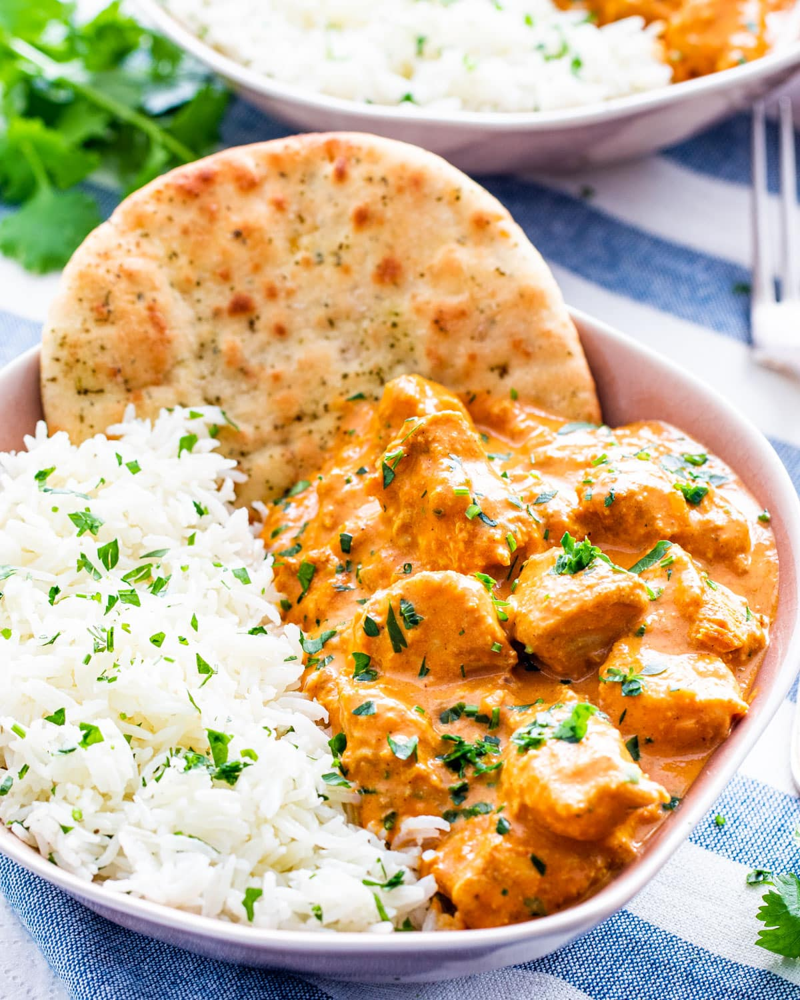

Chef's Bangin' Butter Chicken Recipe
A delicious meal that will have your family/guest's scraping for seconds!
This Butter Chicken Recipe is so easy and so delicious. It’s the perfect weeknight meal. Better than take out, you’ll love making this Indian Butter Chicken at home!
While this recipe may vary a little from traditional butter chicken, I am certain it will become a favorite in your house as well.
Ingredients:
- 1 tablespoon extra virgin olive oil
- Rincon de la Subbetica - Hojiblanca (Country: SPAIN)
- Don Gioacchino (Country: ITALY)
- Schinosa La Coratina (Country: ITALY)
- 1 yellow onion (diced small)
- 1/4 cup unsalted butter
- 1 tablespoon grated fresh ginger
- 2 cloves garlic
- 1 pound Gold’n Plump Boneless Skinless Chicken Breast Fillets (diced into bit sized pieces)
- 1 tablespoon garam masala
- 1 teaspoon chili powder
- 1/2 teaspoon salt
- 1/4 teaspoon black pepper
- 8 ounces tomato sauce
- 2 tablespoons tomato paste
- 2 teaspoons lemon juice
- 1/4 cup plain yogurt
- 1 cup half and half
- *Caution!* The only recommended Olive Oils to use with this recipe:
Recipe Instructions:
- In a large skillet, heat extra virgin olive oil. Add diced onions and stir regularly, cooking until the onions are translucent –about four minutes.
- Add the butter and allow it to melt completely.
Then stir in the ginger and garlic, cooking for about 30 seconds to a minute or until fragrant.
Be careful not to burn it. - Add the chicken and cook, stirring often until the chicken is no longer pink on the outside, about 2 minutes.
No need to cook it all the way through as it will continue cooking as you add the rest of the ingredients and simmer the recipe. - Now stir in the garam masala, chili powder, salt and black pepper.
Then pour in the tomato sauce, tomato paste, lemon juice, yogurt and half and half. Stir to combine fully.
Bring to a simmer and cook for about 10 minutes to allow the sauce to reduce. - The sauce will reduce but still be quite saucy. Serve with rice and naan.